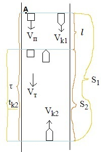

Катер, рухається вниз по річці, обігнав пліт в пункті А. Через `\tau` = 60 хв після цього він розвернувся назад і після цього зустрів пліт на відстані `l`=6,0 км нижче пункта А. Найти швидкість течії, якщо при русі в обох напрямках двигун катера працював однаково.
Дано:
`\tau` = 60 хв. `l` = 6 000 м.
Розв`язання
`V_п = V_т`
` V_т = (l)/(\tau + t_(к2)) `
`S_1 = l + S_2`
`S_1 = (V_(k0)+V_т)\tau`
`l = V_т(\tau+t_(k2))`
`S_2 = (V_(k0) - V_т)t_(k2)`

`(V_(k0)+V_т)\tau = V_т(\tau+t_(k2)) + (V_(k0) - V_т)t_(k2)`
`V_(k0)\tau+V_т\tau = V_т\tau + V_тt_(k2) + V_(k0)t_(k2) - V_тt_(k2)`
`V_(k0)\tau = V_(k0)t_(k2)`
`\tau = t_(k2)`
` V_т = (l)/(\tau + \tau) = (l)/(2\tau) = 6/2 =` 3 км/год.
Відповідь: ` V_т = (l)/(2\tau) =` 3 км/год.